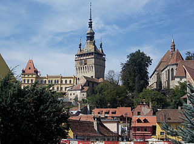

Sighişoara
Descriere
Sighișoara (în dialectul săsesc Schäsbrich, Šesburχ, în germană Schäßburg, în maghiară Segesvár, în latină Saxoburgum / Castrum Sex) este un oraș situat în județul Mureș, Transilvania, România. Municipiul are o populație de 28.102 locuitori (2011). Centru istoric a fost inclus pe Lista monumentelor istorice din județul Mureș, având codul de clasificare MS-II-s-A-15806. De asemenea, centrul istoric este inclus în patrimoniul mondial UNESCO.

Istoric
Undeva lângă Sighișoara se găsea postul de pază militară romană Sandava. Localitatea a fost întemeiată de coloniștii germani (de fapt franconi din regiunea Rinului de nord), care fuseseră invitați să se așeze în Transilvania de către regele Ungariei Géza al II-lea pentru a apăra granițele de est. În această perioadă istorică oamenii de etnie germană au fost denumiți saxoni, dar coloniștii germani adevărați, cunoscuți ca "sașii din Transilvania", nu au nici o legătură cu saxonii din nord-estul sau sud-estul Germaniei. Acești coloniști primesc în folosință fundus regius (pământ crăiesc) și se bucură de drepturi și privilegii deosebite.

Reconstituire a localităţii din anul 1740
În decursul anilor cetatea Sighişoara nu a fost scutită de vicisitudini, prima fiind marea năvălire tătară din 1241, pe când cetatea încă nu era fortificată. Construcţia zidului cetăţii, care are o lungime de 950 m, a început în 1350. Înălţimea iniţială a fost de 4 m, dar în secolul al XV-lea a fost înălţat cu încă 3-4 m. A avut 14 turnuri (care aparţineau fiecare câte unei bresle) şi 4 bastioane. În prezent mai există 9 turnuri şi trei bastioane, dintre care cel mai reprezentativ este Turnul cu Ceas (Turnul Orelor).
Între anii 1431 şi 1435 Vlad Dracul a stat la Sighişoara, aşteptând momentul prielnic de a urca pe tronul Ţării Româneşti. Totodată stăpânea aceste regiuni în numele lui Sigismund de Luxemburg, regele Ungariei. Se pare că în această perioadă (în 1431) s-a născut la Sighişoara Vlad Ţepeş.
Informaţii turistice suplimentare
Centrul oraşului medieval Sighişoara este listat din anul 1999 în patrimoniul cultural mondial UNESCO, fiind protejat ca atare.

În ultimul sfârşit de săptămână al lunii iulie are loc festivalul medieval.
În luna februarie are loc un festival de muzică blues.
În luna iunie are loc un festival de film.
În luna iulie are loc Festivalul Sighisoara Medievala.
În luna septembrie are loc un festival de fanfară.